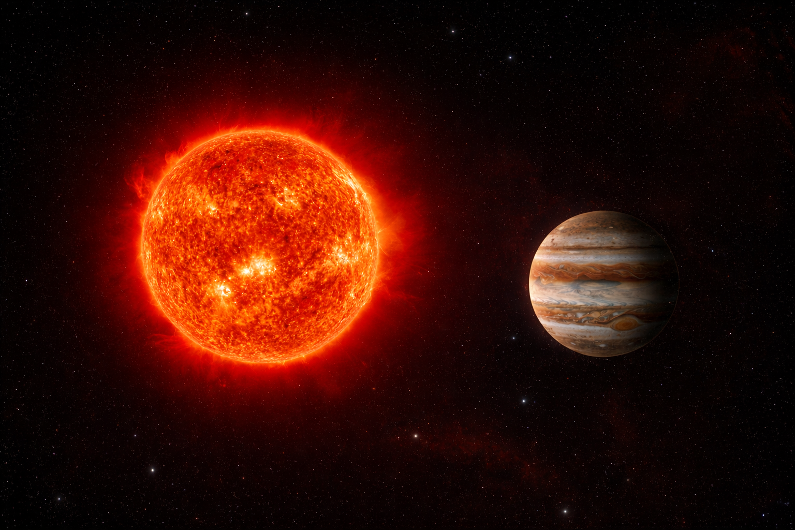
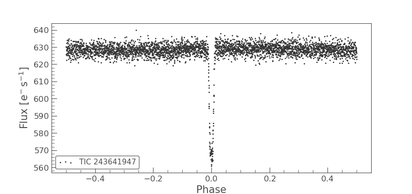

Current planet formation models face challenges in predicting the existence of giant planets around M-dwarf stars, especially in short period orbits. The observed low occurrence rate of such planets is generally consistent with expectations based on the limited mass reservoir available in protoplanetary disks around low mass stars.
My work focuses on monitoring and recharacterizing these planetary systems using the transit method to better understand their physical properties and formation history.
The transit method is based on measuring the decrease in stellar flux when a planet passes in front of its host star, as seen from our line of sight. This event, known as a transit, requires a specific orbital alignment. From these observations, key parameters such as the planetary radius, orbital period, and orbital inclination can be derived.
